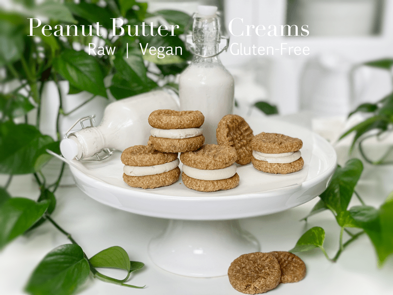
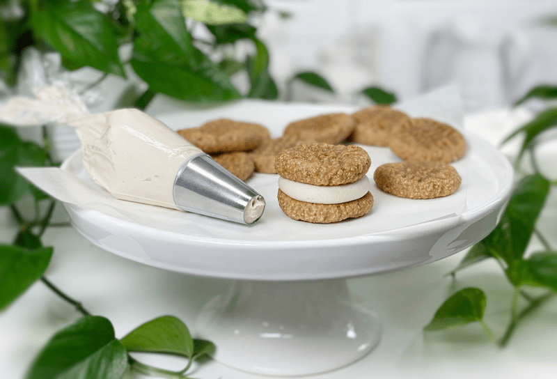

Peanut Butter Creams | Raw and Baked Options
Chewy vegan, gluten-free, peanut buttery cookies with a thick cream center. Ah, heaven. The creamy filling gives traditional peanut butter cookies a new twist. Frankly, this recipe is just a simple marriage of two recipes that already exist on the site: Peanut Butter Cookies (raw and baked options) and White Frosting (raw). I love recipe mash-ups — new creations are invented, leftovers are used up, and my taste buds become satiated with satisfaction.

After creating these cookie sandwiches, I realized that I had far too many sweets on hand. Bob and I can only eat so much, and I do my best to share my creations with others, but this pandemic has made that a bit more challenging. Therefore, I decided to tuck these away in the freezer for future enjoyment. After a long day of work, I decided to sneak one out of the freezer. My thought was to set it on the counter to thaw, but instead, I took a little nibble, which turned into 2,4,8 little nibbles. Before I knew it, I had nothing left but a crumb in the hand. We have a no-crumble-left-behind policy in our house, so that too quickly disappeared.

These cookies are fun to make as a family affair. Once the cookies are ready, load up some piping bags with frosting, and have the family step up to the counter to enjoy the assembly of these sandwich cookies. You can eat them on the spot, letting the creamy frosting squish out from the side with each bite. You can set them in the fridge so the frosting can firm back up, giving you more of a controlled bite. Or as I mentioned above, you can freeze them and eat them like an “ice cream” sandwich.
Enjoy and have a blessed day, amie sue
 Ingredients:
Ingredients:
Yields 29 (2 Tbsp) cookies
Preparation:
- To a food processor, fitted with the “S” blade, combine the oats and salt, processing until it almost resembles flour.
- If you wish to use whole almonds, place them in the food processor with the salt and process until they reach a fine crumble. Due to the natural fats, they won’t break down to fine flour texture.
- Remove the lid and place the peanut butter, sweetener, applesauce, and vanilla around the surface of the bowl. Process until well incorporated and the batter starts to stick together as it goes around the bowl.
- Be careful that you don’t overprocess the batter, or it will get too oily.
- Once you start the machine, don’t stop it, otherwise, the batter may be too thick to restart the blade.
- Form balls and flatten with a fork.
- When flattening, dip the fork in water between pressing the cookies to keep them from sticking. Optionally, sprinkle the top of the cookies with coarse salt.
Dehydration Method
- You can actually enjoy these right away rolled into a ball, or you can dehydrate them at 145 degrees for 1 hour, then reduce to 115 degrees (F) for up to 16 hrs. They won’t become crispy, but the outsides will be dry to the touch.
- Why do I start the dehydrator at 145 degrees (F)? Click (here) to learn the reason.
Baked Method
- Preheat the oven to 350 degrees (F) and line 2 cookie sheets with a silicone mat or parchment paper, or leave ungreased.
- Follow the same instructions above regarding the formation of the cookies.
- *Baking oat-based cookies: Bake on the middle rack for 10 minutes.
- *Baking almond-based cookies: If you choose almonds over oats, I found I had to bake them for 12 minutes. Don’t let the lighter color fool you; they are browning on the bottom. Once they are done baking, slide the parchment paper onto the cooling rack and let them cool before removing them (they will appear soft). Once cool, remove from the parchment paper. If you leave them sitting on the baking pan, they will keep cooking, and we don’t want that.
Assembly
- After the cookies are made, it’s as simple as piping or spooning some white frosting on the bottom side of one of the cookies, followed by placing another cookie on top!
- Store the cookies in the fridge or freezer, due to the frosting.
- ** You will have leftover frosting, which can be a blessing. Place it in an airtight container and freeze until your next sweet creation comes along!
© AmieSue.com